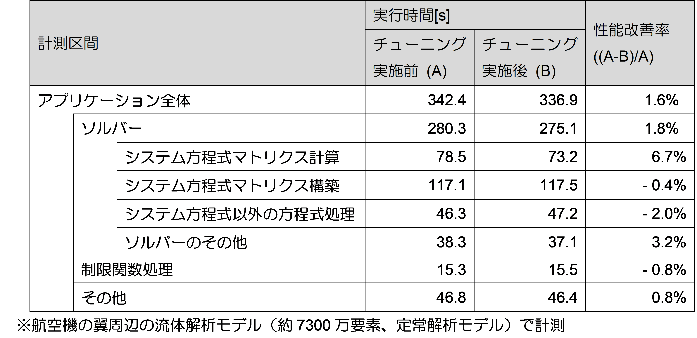

4.10. 2次元配列のメモリ配置改善¶
4.10.1. チューニング対象¶
本節で対象とする関数は、2次元配列のメモリ確保・開放を行う関数を対象としています。配列のメモリ確保・開放は、特定の計測区間に限らず、本アプリケーションの様々な箇所で実行されるため、アプリケーション全体の性能に影響を与えます。
4.10.2. 分析¶
本節では以下の2次元配列のメモリ確保の関数を例として記載します。特徴は以下の通りです
ソースコード抜粋の①で、配列の2次元目の要素数分メモリを確保します。
アドレス上ではランダムな位置でメモリが確保されます。
[チューニング実施前の2次元配列のメモリ確保の関数のソースコード抜粋]
{kind=link}
4.10.3. 実施¶
分析結果を踏まえて、以下のチューニングを実施しました。なお、本節のチューニングはこの関数以外にも、メモリ開放やメモリ再確保などのメモリに関連するその他の関数にも実施しました。
メモリを確保する際、2次元分まとめて確保します。
[チューニング実施後の2次元配列のメモリ確保の関数のソースコード抜粋]
{kind=link}
本節のチューニングにより、2次元配列の各要素がアドレス上で連続した位置に配置されます。これにより2次元配列への連続アクセスが可能になります。
さらに本節のチューニングにより、チューニング項目の項番42を実施することが可能になりました。項番42は、「システム方程式マトリクス計算」に含まれる calc_function_1 関数を対象としたチューニング項目です。2次元の単精度配列の処理を行うループに対して、配列の各要素が連続することを前提に、1つの SIMD 命令で処理する配列要素数を8から16に増やすチューニングを行いました。
4.10.4. 効果の検証¶
本節のチューニング項目と、項番42のチューニング項目の改善効果を評価するため、アプリケーションの実行時間を計測しました。本節のチューニング項目はアプリケーションの様々な箇所に影響を与える可能性があるので、各計測区間の実行時間も計測します。なお。ここでは性能評価用のモデルよりも要素数の大きいモデル（7300万要素）を用いて評価しました。
下表は計測区間ごとの実行時間の結果です。計測結果によると、アプリケーション全体で性能が1.6%改善し、「システム方程式マトリクス計算」が6.7%改善しました。これは、本節と項番42のチューニング項目による効果が表れていると考えられます。
{kind=link}